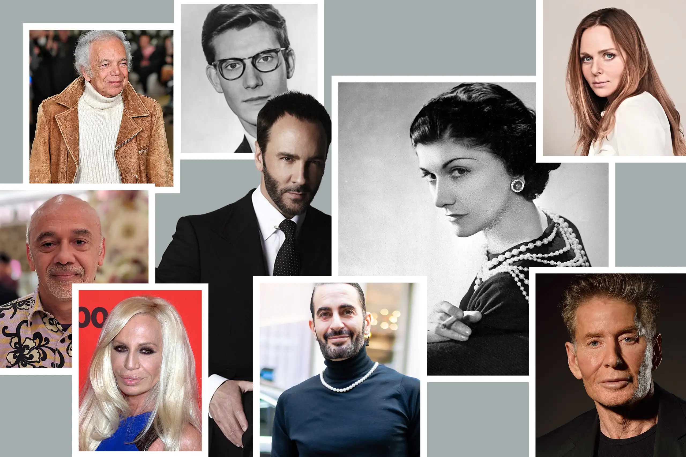

From the latest trends to classic, timeless and iconic attires that have blessed the eyes of many.
Fashion has always made a relevant contribution to society. It helps express one's nature and has often been used as a means to make social statements in times of adversity! Who knew colours and shapes of fabric on a body could say so much?